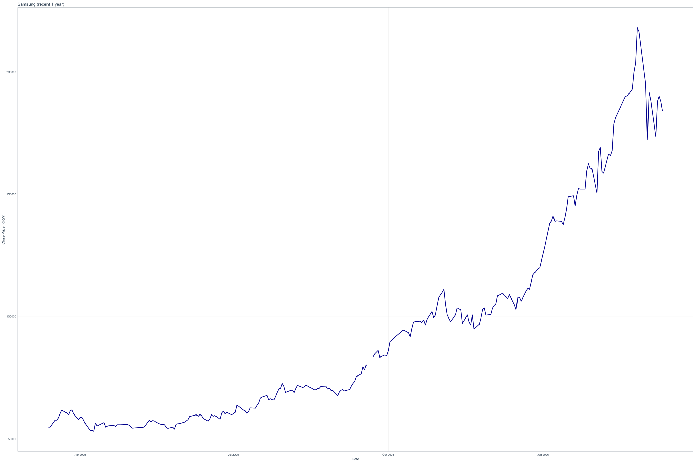

library(tidyquant)
# 1. 삼성전자(005930.KS) 최근 1년 주가 수집
samsung <- tq_get("005930.KS", from = Sys.Date() - 365)
# 2. ggplot을 이용한 시각화 (autoplot 대신 사용)
samsung %>%
ggplot(aes(x = date, y = close)) +
geom_line(color = "darkblue", linewidth = 1) +
labs(title = "Samsung (recent 1 year)",
x = "Date",
y = "Close Price (KRW)") +
theme_tq() # 금융 데이터에 어울리는 깔끔한 테마Introduction
FMB819: R을 이용한 데이터분석
고려대학교 경영대학 정지웅
Welcome to FMB 819!
수업의 목표
- 통계 소프트웨어 R과 친숙해지고,
- 데이터를 수집, 가공, 표현할 수 있으며
- 기본적 통계 개념 이해하여
- 데이터 분석의 결과를 해석할 수 있다.
데이터 분석의 목표
- 기술 요약(Description): 현상을 설명
- 예측(Prediction): 관측되지 않는 값을 예측
- 인과 관계(Causality): 한 변수가 다른 변수에 미치는 영향 분석
- 많은 경우 의사 결정을 위해서 기술/예측/인과 관계를 조합적으로 파악할 필요
R이란?
R이란?
R은 강력한 통계 및 그래픽 기능을 갖춘 프로그래밍 언어.- 오픈소스(open source)
- 데이터 정리, 시각화, 기계학습 등 거의 모든 분석 가능.
- 활발한 온라인 커뮤니티, 대부분의 문제에 대한 해결책 존재.
R의 많은 기능들 중 우리가 주로 사용할 기능- 데이터 수집: 웹에서 데이터 직접 불러오기
- 데이터 가공: 데이터 정리, 변환, 요약
- 데이터 시각화: 고급 그래프와 차트 생성
통계 분석: 회귀분석, 가설검정 등 다양한 통계 기법 적용
금융 데이터의 현실
- 데이터의 폭발적 증가: 틱(Tick) 데이터, 대체 데이터(Alternative Data), 비정형 뉴스 텍스트 등 엑셀로 처리하기 힘듬.
- 엑셀의 치명적 한계:
- 인적 오류: 복잡한 수식과 매크로는 추적이 어려움.
- 재현성(Reproducibility) 부족: 데이터 업데이트 시 매번 수작업으로 복사/붙여넣기를 반복.
- 강력한 통계 엔진과 프로그래밍이 결합된 R이 유용.
1. 재현성과 업무 자동화
- R은 “데이터 수집 → 전처리 → 분석 → 시각화 → 보고서 작성”의 전 과정을 하나의 코드 파이프라인으로 통합.
- 자동화된 보고서 생성: R Markdown과 Quarto를 이용해 매주/매월 자동으로 업데이트되는 보고서 작성 가능.
- 알고리즘 트레이딩: R로 작성한 트레이딩 알고리즘을 API와 연동하여 실시간으로 거래 실행 가능.

2. 금융에 적합한 생태계
파이썬(Python)이 범용 프로그래밍 언어라면, R은 통계와 데이터 분석을 위해 만든 ‘데이터를 위한 언어’
- 퀀트 투자, 리스크 관리, 알고리즘 트레이딩 분야에서 광범위하게 사용.
- 금융 생태계: 수백 개의 전용 패키지 존재.
- 시계열 분석 (
xts,zoo) - 재무 데이터 처리 (
tidyquant,quantmod) - 포트폴리오 최적화 (
PortfolioAnalytics) 등 - 기타 금융 관련 패키지들 https://cran.r-project.org/web/views/Finance.html
- 시계열 분석 (
- 시스템 개발이나 거대한 AI 모델 구축이 목적이 아니라면, 주어진 금융 데이터를 빠르게 탐색하고, 통계적으로 엄밀하게 분석하며, 설득력 있는 보고서를 만드는 데는 R이 유용.
3. 시각화 및 커뮤니케이션
- ggplot2 R의 시각화 생태계는 글로벌 언론사(NYT, BBC 등)와 헤지펀드에서 사용할 만큼 유연하고 미려함.
- Quarto 분석한 결과를 클릭 한 번으로 PDF, HTML, PPT 보고서로 변환 (지금 보는 이 슬라이드처럼).
- Shiny를 통해 직접 조작해볼 수 있는 ‘인터랙티브 웹 대시보드’ 구축.
Finance MBA가 R을 무기로 삼아야 하는 이유
- 단순 엑셀 모델러를 넘어, 대용량 데이터를 다루는 역량.
- 수작업 리포팅에 낭비되는 시간을 줄이고, 중요한 문제에 시간을 쏟을 수 있음.
- 최신 통계 및 기계학습 모델을 금융 데이터에 즉각적으로 적용 가능.
R 설치
R / RStudio 설치 시 주의사항 (한글 경로 이슈)
사용자 폴더 경로에 한글/특수문자(non-ASCII) 들어가면 R/RStudio 패키지 설치 과정에서 이유 모를 오류 뜨는 경우 있음
- 예:
C:\Users\홍길동\...처럼 프로필 경로에 한글 들어간 케이스
제일 안전한 예방책: 영문 사용자 계정으로 설치/사용
- 설치 전에 Windows 사용자 폴더 경로 확인
C:\Users\사용자이름\...
- 사용자 이름(프로필 폴더명)에 한글 들어가 있으면
- 영문 이름 새 계정(가능하면 관리자 권한) 하나 만들고
- 그 계정으로 R/RStudio 설치·사용
- 주의할 점 있음: Windows에서 “표시 이름”만 바꿔도 실제 프로필 폴더명은 그대로인 경우 많음
→ 그래서 새 계정 생성이 더 확실함 - 프로젝트/과제 폴더를 영문 경로에 두는 게 안전
- 예: ~/projects/finance_mba/ (폴더명 영문/숫자/언더스코어)
Posit Cloud (온라인)
- Posit Cloud는 RStudio의 온라인 버전으로, 브라우저에서 바로 R을 실행할 수 있음.
- Posit Cloud에 접속 후 회원가입/로그인
New RStudio Project를 눌러 새 프로젝트 생성- 좌측
Files/Console/Terminal을 이용해 로컬 RStudio처럼 실습 진행
R 설치 방법 (Windows / macOS)
Windows: 공식 웹사이트에서 다운로드하여 설치
- CRAN 공식 웹사이트에 접속
- “Download R for Windows” 클릭
- “base” 패키지를 선택하고 최신 버전을 다운로드
.exe파일 실행 후 기본 설정으로 설치
macOS: 공식 웹사이트에서 다운로드하여 설치
- CRAN 공식 웹사이트에 접속
- “Download R for macOS” 클릭
- 본인 칩셋(Apple Silicon / Intel)에 맞는 설치 파일 다운로드
.pkg파일 실행 후 기본 설정으로 설치
RStudio 설치 방법 (Windows / macOS)
R 프로그래밍 언어를 위한 통합 개발 환경(IDE, Integrated Development Environment)
공식 웹사이트에서 다운로드하여 설치 (Windows/macOS 공통)
- CRAN 공식 웹사이트 접속
- “RStudio Desktop”의 선택하여 다운로드
- 다운로드한 설치 파일 실행 후 기본 설정으로 설치
- 설치 완료 후 RStudio 실행하여 정상 작동하는지 확인
설치 확인
설치가 정상적으로 완료되었는지 확인하기 위해 R과 RStudio 실행.
RStudio 실행
- Windows는 검색창, macOS는 Spotlight(
Command + Space)에서 “RStudio” 검색 후 실행. - 콘솔에서
version입력하여 설치된 R 버전 확인.
- Windows는 검색창, macOS는 Spotlight(
R에서 간단한 코드 실행
- 다음 코드를 console에서 실행하여 정상 동작하는지 확인.
R 및 RStudio 업데이트 방법
- R 엔진(코어)과 RStudio(편집기)는 별개 프로그램이므로 각각 따로 업데이트해야 함.
1. R 엔진 업데이트
Windows:
installr패키지 활용 (오류 방지를 위해 RStudio가 아닌 기본 R GUI에서 실행하는 것을 권장)Mac: CRAN 홈페이지에 접속해서 최신
.pkg버전을 다운로드하고 그대로 덮어씌워서 설치함.
R 및 RStudio 업데이트 방법
2. RStudio 업데이트
- RStudio 상단 메뉴: Help -> Check for Updates 클릭함.
- 업데이트 팝업창이 뜨면 안내에 따라 최신 버전 다운로드 및 설치 진행함.
3. 패키지 일괄 업데이트 (중요 포인트)
R 버전을 올리고 나면 기존 설치한 패키지들도 버전에 맞게 새로고침 해줘야 함.
RStudio 화면 구조

RStudio 환경
RStudio를 실행하면 여러 창(윈도우)으로 구성되어 있음.
콘솔(Console): 명령어를 입력하고 실행하는 창.
>프롬프트에서 R 코드 입력 후 실행스크립트 편집기 (Source Editor):
.R파일을 열거나 작성. 여러 줄의 코드를 작성/실행 가능환경 창 (Environment): 현재 사용 중인 변수와 데이터 프레임을 확인. 데이터 구조를 파악
파일 및 플롯 창 (Files, Plots, Packages, Help)
- Files: 작업 디렉터리 내 파일 목록 확인
- Plots: 생성된 그래프 확인
- Packages: 설치된 패키지 목록 및 관리
- Help: R 함수 및 패키지 도움말 검색 가능
콘솔과 프롬프트
기본적인 실행 방법
>뒤에 명령어 입력 후Enter를 누르면 실행.
R 콘솔 사용 팁
이전 명령어 불러오기: 위쪽 화살표(
↑) 키를 사용하면 이전에 입력한 명령어를 불러옴명령어 자동 완성: Tab 키를 사용하여 변수 및 함수 자동 완성 가능.
여러 줄 입력:
- 긴 명령어 입력 시 자동으로 다음 줄로 넘어감 (
+기호 표시됨). Shift + Enter를 누르면 줄바꿈만 하고 실행되지 않음.
- 긴 명령어 입력 시 자동으로 다음 줄로 넘어감 (
R 스크립트 (Script)
- 새로운 R 스크립트 생성:
File > New File > R Script선택. - 스크립트에서 코드 실행:
Ctrl + Enter: 현재 줄 실행.Ctrl + Alt + R: 전체 스크립트 실행.
- 주석 작성:
#을 사용하여 코드 설명 추가 가능.
몇 가지 유용한 설정
배경 및 글자 색상 변경
- R 스튜디오는 기본적으로 흰색 바탕에 검은색 글씨. 어두운 화면으로 설정을 변경 가능
- RStudio 상단 메뉴: Tools -> Global Options -> Appearance 탭에서 테마 선택 가능 (예: “Tomorrow Night Bright” 등 어두운 테마)
스크림트 한글 깨짐 방지
- 스크립트 내용 중 한글이 깨지는 것을 방지하기 위해 인코딩 방식을 설정
- RStudio 상단 메뉴: Tools -> Global Options -> Code 탭에서 “Saving” 섹션의 “Default text encoding”을 “UTF-8”로 설정
- 한글 깨짐이 해결되지 않는 경우, [File → Reopen with Encoding] 메뉴에서 [UTF-8] 항목을 선택
- [Set as default encoding for source files] 항목을 선택한 후 [OK]. UTF-8로 인코딩이 설정된 후 파일을 다시 열림
몇 가지 유용한 설정
프로젝트 만들기
- 코딩 전에 Project 만들면 해당 과제/분석에 쓰는 코드·이미지·문서 파일을 한 폴더 체계로 관리 가능
- RStudio 상단 육각형(Project) 버튼 누르거나
File → New Project클릭함Create Project에서New Directory선택함
Project Type에서New Project클릭함Directory name에 프로젝트 이름 입력함Create project as subdirectory of에서 프로젝트 폴더 만들 위치 선택함 (Browse로 고르면 됨)- 아래
Create Project클릭하면 RStudio가 재시작되면서 프로젝트 이름이 우측 상단에 표시되고, 파일 창도 프로젝트 폴더로 이동됨. 폴더 안에*.Rproj파일도 생성됨 (예:fmb819.Rproj). 이후 스크립트/데이터/이미지 전부 프로젝트 폴더에 저장하면서 작업하면 됨. - 프로젝트 이름/폴더 경로에 한글 들어가면 오류 날 수 있으니 영문 추천
- RStudio 상단 육각형(Project) 버튼 누르거나
Task 1
새로운 R 스크립트를 생성하시오 (
File > New File > R Script) 파일을lecture_intro.R로 저장하시오.다음 코드를 스크립트에 입력하고 실행하시오. 코드를 실행하려면
Ctrl+Enter(코드를 강조 표시하거나 커서를 코드 줄 끝에 놓으면 실행).첫 번째 줄만 실행하면 무슨 일이 일어나는지 확인하시오. (객체 생성)
x의 세제곱을 할당하는x_3이라는 새로운 객체를 만드시오. 할당할 때=또는<-를 사용.
도움말 찾는 방법
R built-in help:
패키지 (Packages)
R패키지는 특정 기능을 제공하는 코드와 데이터를 포함한 소프트웨어 패키지패키지 설치는 간단.
install.packages함수를 사용:패키지의 내용을 사용하려면, Library에서 불러와야 함. 이를 위해
library함수를 사용:업데이트 하려면
데이터 유형 (Data Type)
데이터 유형 (Data Type)
- R에서 데이터를 원활하게 다루기 위해 가장 먼저 알아야 할 것은 데이터의 유형(Type)임.
- 금융 데이터 분석에서는 주로 숫자, 문자열, 날짜 유형를 다룸.
숫자 유형
- R에서 기본적으로 다루는 숫자 데이터는 실수(Double) 유형임.
- 수열 (range) 생성
문자열 유형
- 일반적인 글자 혹은 텍스트를 문자열(Character Strings)이라고 부름. paste() 함수를 이용해 문자를 하나로 붙일 수 있음.
날짜 유형
- R에서 날짜는
Date클래스의 객체로 표현됨.as.Date()함수를 사용하여 문자열을 날짜로 변환할 수 있음.
lubridate패키지를 이용하면 날짜 유형 변경과 정보 추출을 직관적이고 쉽게 할 수 있음.
library(lubridate)
date_str = "2024-12-31"
date_obj = ymd(date_str) # "year-month-day" 형식의 문자열을 날짜로 변환
date_obj
year(date_obj) # 날짜에서 연도 추출
month(date_obj) # 날짜에서 월 추출
week(date_obj) # 날짜에서 주 추출
day(date_obj) # 날짜에서 일 추출
yday(date_obj) # 날짜에서 연중 일수 추출
mday(date_obj) # 날짜에서 월 중 일수 추출
wday(date_obj, label=TRUE) # 날짜에서 요일 추출 (라벨로 표시)날짜 유형
- 날짜 객체를 다루면 더하기, 빼기 등의 직관적인 연산을 손쉽게 처리할 수 있음.
- 숫자와 마찬가지로 seq() 함수를 이용해 일정한 패턴을 가진 날짜 벡터를 생성할 수 있음.
start_date = as.Date("2024-01-01")
end_date = as.Date("2024-12-31")
date_seq = seq(from = start_date, to = end_date, by = "1 month") # 1개월 간격으로 날짜 생성
date_seq
date_seq = seq(from = start_date, to = end_date, by = "1 week") # 1주 간격으로 날짜 생성
date_seq
date_seq = seq(from = start_date, to = end_date, by = "1 day") # 1일 간격으로 날짜 생성
date_seq데이터 구조 (Data Structures)
데이터 구조 (Data Structures)
R에서 사용되는 데이터 구조는 벡터(Vector), 행렬(Matrix), 리스트(List), 배열(Array), 데이터프레임(Dataframe)임.
- 벡터는 동일한 유형의 데이터를 저장하는 1차원 구조
- 행렬은 동일한 유형의 데이터를 저장하는 2차원 구조
- 리스트는 서로 다른 유형의 데이터를 저장할 수 있는 1차원 구조
- 배열은 동일한 유형의 데이터를 저장하는 다차원 구조
- 데이터프레임은 서로 다른 유형의 데이터를 저장할 수 있는 2차원 구조로, 표 형식으로 데이터를 다루는 데 적합

벡터 (Vectors)
- 벡터는 R의 가장 기본적인 1차원 데이터 구조임.
c()함수나 콜론(:)을 이용해 생성할 수 있음.
- 서로 다른 유형의 데이터가 하나의 벡터로 묶이면, 범용성이 넓은 유형로 강제 변환됨. (문자 > 숫자 > 논리값)
- 생성된 벡터의 특정 위치나 조건에 맞는 데이터를 대괄호([])를 사용해 추출할 수 있음.
리스트 (Lists)
- 리스트는 원소 간의 데이터 타입이나 길이가 달라도 하나의 객체로 묶을 수 있는 구조. 리스트 안에 또 다른 리스트를 넣는 것도 가능함.
- 리스트에 새로운 항목을 추가할 때는 append() 함수나 달러($) 기호를 사용
리스트 (Lists)
- 리스트 안의 값을 추출할 때는 대괄호([])와 이중 대괄호([[]])의 차이.
행렬 (Matrix)
- 행렬은 동일한 유형의 데이터를 저장하는 2차원 구조.
matrix()함수를 사용하여 생성할 수 있음.
배열 (Array)
- 배열은 동일한 유형의 데이터를 저장하는 다차원 구조.
array()함수를 사용하여 생성할 수 있음.
데이터 프레임 (data.frame)
- 데이터프레임은 엑셀과 비슷한 2차원(행렬) 구조로, 각 열(Column)마다 다른 데이터 타입을 가질 수 있어 R에서 가장 널리 쓰임.
- 대괄호([행, 열])를 사용해 데이터프레임의 특정 데이터를 추출.
- 실제로는
data.frame을 직접 생성하기보다는, 데이터를 포함하는 파일을R로 불러오는 방식이 일반적.
데이터 프레임 (data.frame)
- 데이터프레임을 설명하는 데 유용한 함수
str(df) # 데이터프레임의 구조를 보여줌 (각 열의 이름, 데이터 유형 등)
names(df) # 데이터프레임의 열 이름을 벡터 유형로 반환
nrow(df) # number of rows
ncol(df) # number of columns
summary(murders) # 각 열의 요약 통계량을 보여줌 (숫자형은 최소값, 1사분위수, 중앙값, 평균, 3사분위수, 최대값; 문자형은 빈도수 등)
head(murders) # `head` 함수: 데이터프레임의 처음 몇 행을 보여줌
tail(murders) # `tail` 함수: 데이터프레임의 마지막 몇 행을 보여줌
class(df) # 데이터프레임의 클래스(유형)를 보여줌
typeof(df) # 데이터프레임이 내부적으로 어떻게 저장되는지 보여줌 (예: "list")- typeof()는 R이 데이터를 내부적으로 어떻게 저장하는지(메모리 구조)를 보여주고, class()는 R이 해당 데이터를 어떤 객체로 취급하고 다룰 것인지(객체 지향적 관점)를 보여줌
Task 2
help(read.csv)또는 웹서치를 통해 R에서.csv파일을 가져오는 방법을 찾아보시오. 단, “Import Dataset” 버튼을 사용하거나 패키지를 설치하지 마시오.gun_murders.csv 파일을 새로운 객체
murders에 저장하시오. 이 파일은 2010년 미국 주별 총기 살인 사건 데이터를 포함. (힌트: 객체는=또는<-를 사용하여 생성)murders가data.frame형식인지 확인하시오:class(murders)murders에 포함된 변수를 확인하시오.작업 공간에서
murders를 클릭하여 내용을 확인하시오total변수는 무엇을 의미하는 것일까?
데이터프레임 열 (column) 추출하기
- 한 개의 열을 벡터 유형로 추출하려면
$연산자 (murders$state) 또는 대괄호 연산자[]를 이름이나 위치 인덱스와 함께 사용:
데이터프레임 subset
- 데이터프레임에서 특정 부분을 선택하려면
murders[행 조건, 열 번호]또는murders[행 조건, "열 이름"]을 사용.
subset명령어 사용 가능 (종종 더 직관적)
Task 3
murders데이터프레임에는 몇 개의 관측값(observations)이 있는가?몇 개의 변수? 각 변수의 데이터 유형(data type)는 무엇인가?
“
:” 연산자는1:10처럼 사용하면 1부터 10까지의 연속된 숫자 생성을 의미함. 이를 활용하여murders의 10번부터 25번 행을 포함하는 새로운 객체murders_2를 만드시오.state와total열만 포함하는murders_3객체를 만드시오. (c함수가 벡터를 생성함)아래 코드를 실행하여 10,000명당 살인 사건 수를 나타내는
total_percap변수를 생성하시오.
murders 객체를 클릭하여 새 변수를 확인해 보시오.
기타 유용한 명령어/함수
- 변수 목록보기/삭제하기
- 함수 만들기
- 엑셀 파일 불러오기
기타 유용한 명령어/함수
- If 구문
- for loop 구문
- while loop 구문
- 함수 안에서 조건문과 반복문을 함께 사용하기
- apply 계열 함수 (반복문 대체)
- lapply 계열 함수 (리스트에 적용)
비교 논리 연산
Scalar vs. Scalar 비교
Vector vs. Vector 비교
## [1] FALSE TRUE FALSE## [1] TRUE FALSE TRUE## [1] TRUE FALSE FALSE## [1] FALSE TRUE TRUEScalar vs. Vector 비교
비교 논리 연산
**is.*() 함수 : 개체의 속성을 묻는 함수**
## [1] TRUE TRUE FALSE FALSE FALSE## [1] FALSE FALSE TRUE FALSE FALSE## [1] FALSE FALSE FALSE TRUE TRUE## [1] FALSE FALSE FALSE TRUE FALSE## [1] FALSENULL은 완전히 비어 있는 값으로, 벡터에 포함될 경우 자동으로 삭제됨.na는 not available,nan는 not a number (예, 0/0, sqrt(-1)).nan은 숫자형 결측값,na는 모든 종류의 결측값이라 생각하면 됨.
결측치 처리하기
is.na()함수를 사용하여 결측값이 있는지 확인할 수 있음.
- 데이터프레임에 결측치가 있으면 평균 등 계산이 불가능해져 에러가 발생함.
na.rm = TRUE옵션을 사용하여 결측치를 무시하고 계산할 수 있음.
R 연산자 정리
1. 기초 연산자 (Arithmetic Operators)
| 연산자 | 설명 | 예제 | 결과 |
|---|---|---|---|
+ |
덧셈 | 5 + 3 |
8 |
- |
뺄셈 | 5 - 3 |
2 |
* |
곱셈 | 5 * 3 |
15 |
/ |
나눗셈 | 5 / 3 |
1.6667 |
^ 또는 ** |
거듭제곱 | 5^3 |
125 |
%% |
나머지 | 5 %% 3 |
2 |
%/% |
정수 나눗셈 | 5 %/% 3 |
1 |
2. 관계 연산자 (Comparison Operators)
| 연산자 | 설명 | 예제 | 결과 |
|---|---|---|---|
== |
같음 | 5 == 3 |
FALSE |
!= |
다름 | 5 != 3 |
TRUE |
> |
초과 | 5 > 3 |
TRUE |
< |
미만 | 5 < 3 |
FALSE |
>= |
이상 | 5 >= 3 |
TRUE |
<= |
이하 | 5 <= 3 |
FALSE |
3. 논리 연산자 (Logical Operators)
| 연산자 | 설명 | 예제 | 결과 |
|---|---|---|---|
& |
AND (벡터 연산) | c(TRUE, FALSE) & c(TRUE, TRUE) |
TRUE FALSE |
| |
OR (벡터 연산) | c(TRUE, FALSE) | c(FALSE, FALSE) |
TRUE FALSE |
! |
NOT | !TRUE |
FALSE |
&& |
AND (단일 값 연산) | TRUE && FALSE |
FALSE |
|| |
OR (단일 값 연산) | TRUE || FALSE |
TRUE |
강의 관련 정보
성적 산출
수업에서 in-class assignment (
task) 를 완성해서 제출 \(\rightarrow\) 30%: 과제당 점수: 30/과제 개수기말 시험 \(\rightarrow\) 70%
출석은 확인하지 않음.
보통 A는 30%이내 (A+는 아주 뛰어난 경우), C는 총점 50점 미만의 경우, D/F 는 아주 저조한 경우
수업 정책
Be nice. Be honest. Don’t cheat.
숙제는 늦게 제출하면 안됨: 수업 당일 저녁 11시까지 LMS에 제출
부정행위 및 타인의 과제 무단 활용 금지: C나 F 중 불리한 등급 받게 됨
그룹으로 협력: 협력 장려, 다만 개인이 작성하여 제출
과제 제출 방법
Quarto Document로 작성 LMS에 제출.
1. 새 Quarto 문서 생성
- RStudio에서 File → New File → Quarto Document… 선택
- title과 포맷(HTML) 선택 후 Create 버튼 클릭
- 생성된
.qmd파일에서 문서를 작성.
2. 과제 템플릿 예시
다음 양식을 이용하여 과제 제출: 과제 양식 링크
과제 작성 후 적당한 곳에 저장, 예:
C:\Users\user\Documents\assignment\assign1.qmd
3. Quarto 문서 렌더링
RStudio에서 Render 버튼 클릭
HTML 문서가 생성됨 (
홍길동.html생성됨)
4. 과제 제출
- Quarto 문서와 함께 출력된 HTML 문서를 LSM시스템에 업로드
Quarto 기초
Quarto란 무엇인가?
- 데이터를 분석하는 코드와 그 결과를 설명하는 텍스트를 하나의 문서에 통합하여 작성할 수 있는 퍼블리싱 시스템.
- 과거의
R Markdown을 더욱 발전시킨 형태로, RStudio에서 작성한 문서를 클릭 한 번으로 HTML, PDF, Word, PPT(Revealjs) 슬라이드로 변환 가능. - 재현 가능한 연구(Reproducible Research): 데이터가 변경되어도 코드만 다시 실행(Render)하면 보고서의 숫자와 그래프가 자동으로 업데이트됨.
Quarto 기본 구조
Quarto 문서(.qmd)는 크게 세 가지 요소로 구성됨.
- YAML 헤더: 문서 맨 위에
---로 둘러싸인 부분. 문서의 제목, 저자, 출력 형식(HTML, PDF 등)을 결정함. - 마크다운(Markdown) 텍스트: 일반적인 설명, 제목, 글머리 기호 등을 작성하는 텍스트 영역.
- 코드 청크(Code Chunk): 실제 R 코드가 실행되는 공간.
필수 마크다운(Markdown) 문법
워드 프로세서 없이 텍스트에 간단한 기호를 붙여 서식을 지정함.
1. 제목 (Headers)
2. 텍스트 강조
3. 목록 (Lists)
코드 청크(Code Chunk)의 이해
- 문서 내에 R 코드를 삽입하고 실행 결과를 보여주려면 코드 청크를 만들어야 함.
- 단축키
Ctrl + Alt + I(Mac:Cmd + Option + I)를 누르면 회색 박스가 생성됨.
주요 청크 옵션 (Chunk Options) 코드 청크 상단에 #| 기호를 사용하여 코드와 결과의 출력 방식을 제어할 수 있음.